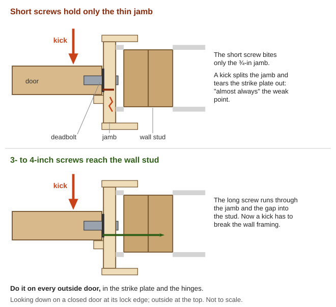
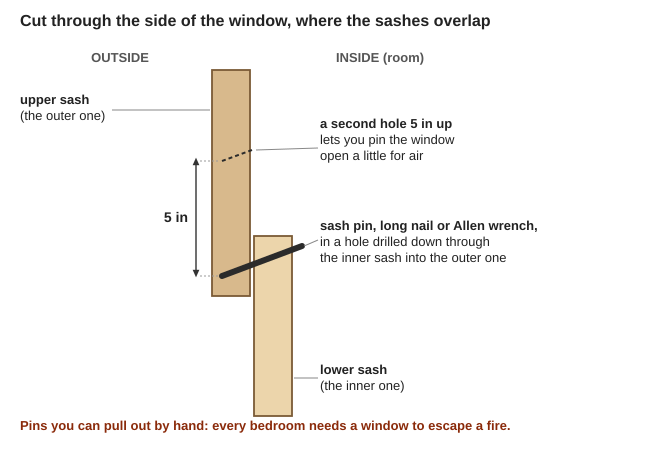
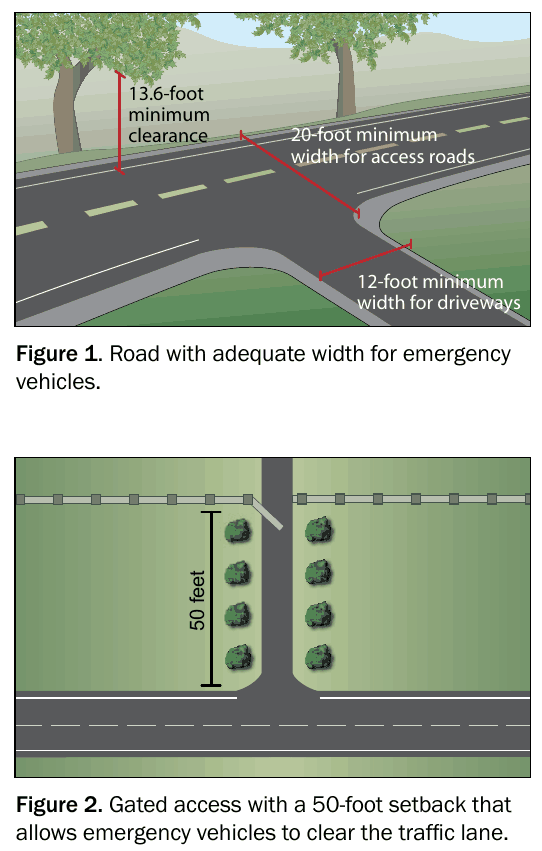
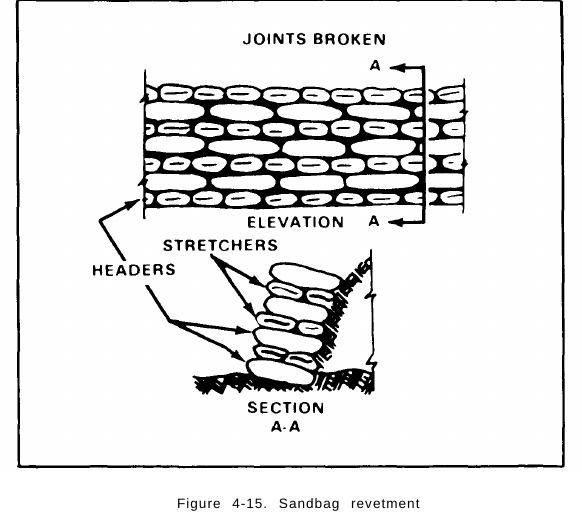
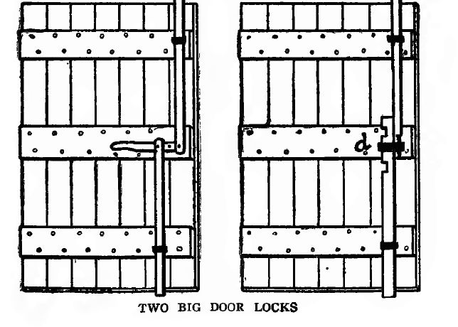
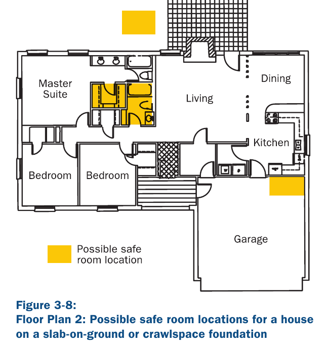
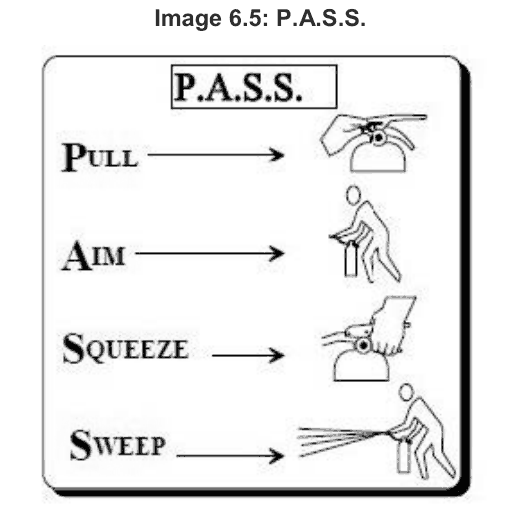

📘 Guides › 📡 Radio, community & protection · 🆘 Emergency · 📇 Index A–Z · 💬 Ask
How to keep your family, home, food, tools and animals from being easy targets when no deputy is coming: looking like a poor choice to thieves, hearing trouble early, slowing people down, getting everyone to safety, calling the neighbors, and staying within Oregon law. This guide is strictly defensive. On purpose, it has nothing on fighting, patrolling or building traps. The books are in Southern-Oregon\Home-Security\ (Home-Hardening, Safe-Room, Neighborhood-Watch, Rural-Property, Law), with the watch and de-escalation books in Southern-Oregon\Community-Barter\ and guardian-dog books in Southern-Oregon\Animals\Planning-Predators-Toxic-Plants.
⚠️ Rules that prevent the worst outcomes
- Never booby-trap anything: no spring guns, tripwires, spikes or rigged doors. Traps can't tell a thief from a child, a firefighter or a neighbor coming to help. In 2018 a man in Williams (here in Josephine County) rigged a house with shotgun traps. One went off into an FBI bomb technician's leg, and in 2023 he got 150 months in federal prison (U.S. Attorney's Office, District of Oregon, 2023). See the law.
- Don't shoot at property, or at anyone who is not an immediate deadly threat to a person. Oregon never allows deadly force just to stop theft or vandalism (ORS 161.229).
- Know who is on your land before you do anything. At night the "intruder" may be a neighbor, a lost child, a confused elder or someone running from a fire.
- Keep firearms locked away from children and thieves. It's Oregon law (ORS 166.395).
- A person's life is worth more than any property. Let things go. Physical force is "never recommended" except to stop an injury (De-escalation, p. 4).
- Avoid confrontation and call the neighbors. Watchers "should never confront suspicious persons" (Watch Manual, p. 20).
Think of protection as layers. Each one makes a thief more likely to give up or be seen, and buys your family time. The Watch Manual compares it to sports: "the more defenses a team has... the less likely the opponent will be to score" (Watch Manual, p. 32).
| Layer | What it means | On a Valley lot (examples) |
|---|---|---|
| Deter | Make your place look like a poor choice | Someone home, a dog, no supplies on show, a locked gate |
| Detect | Know early that someone is coming | Dog, geese, gate bell, gravel, motion light, radio check-ins |
| Delay | Slow them down | Strong doors and strike plates, locked outbuildings, pinned windows |
| Respond | Protect people, not things | Safe room or escape, whistle alarm, neighbors on the radio |
Why layers matter more out here:
"Respond" in this guide never means going out to fight. It means getting people safe and getting help.
For barriers that slow people and vehicles without hurting anyone, see Fortifying the property.
📚 Go deeper: COPS Burglary of Single-Family Houses, pp. 20–25 — what the research says about which houses get picked; Neighborhood Watch Manual, ch. 9 — basic home "target hardening".
Look lived-in. "Most burglars do not target occupied houses, taking great care to avoid them"; some ring the doorbell first to check (COPS Burglary, p. 20). So:
Don't advertise supplies. Burglars read a house's contents from what they can see outside (COPS Burglary, p. 25). After a collapse the "signs of wealth" change (rule of thumb):
| Gives you away | Quieter way (rule of thumb) |
|---|---|
| Bright windows when every other house is dark | Curtains or blankets over lit rooms (cover windows people can see into: Seattle Police) |
| A generator roaring every evening | Run it in daylight, only as needed, outdoors and away from windows (carbon monoxide). See the Off-Grid Power guide |
| Cooking smoke and smells at all hours | Cook at the same times as the neighbors |
| Empty food boxes and fuel cans by the road | Burn, compost or bury packaging well back from the road |
| Talking about your stores at trades | Keep amounts private. Share through the group, not at the roadside |
Quiet sharing. Hungry people steal, so fair sharing prevents theft (Community guide). Give through the group or a welcome point (below), so no one house becomes "the place with food" (rule of thumb).
What to say to strangers (rule of thumb): friendly and short. "We're getting by like everyone. The table at the crossroads has water and news." Don't say how many live here, who is away, what you have, or that you're armed.
📚 Go deeper: COPS Burglary, p. 20 — occupancy and how burglars check; Seattle Police, Deterring Burglary From Outside the Home — looking at your home "through the eyes of a burglar".
Doors get kicked, not picked. "The most common way used to force entry through a door with a wooden jamb is to kick it open." The weak point is "almost always the strike plate," which is held only by short screws into thin trim (Seattle Police, Door Security; how a strike plate sits in the jamb).
The cheapest big fix (Seattle, Door Security):

Long screws carry a kick into the wall framing instead of the thin jamb (a diagram drawn for this guide).Doors and locks (Watch Manual, pp. 32–33):
Windows have latches, not locks (Seattle, Window Security):

A sash pin locks both sashes; a second hole 5 in up pins it open for air (a diagram drawn for this guide).Garages and outbuildings:
📚 Go deeper: Seattle Police Door Security — strike plates, screws, deadbolts on one page; Seattle Police Window Security — every window type; USDA Wood-Frame House Construction, pp. 141–147 — how doors, frames and hardware go together.
The three CPTED ideas (Crime prevention through environmental design; COPS CPTED, pp. 15, 17–19):
Sightlines and brush, with fire safety first. Dense shrubs and privacy fences near doors and windows give a burglar cover (COPS Burglary, p. 21). Seattle Police use a 3/6 rule: shrubs under 3 ft, tree limbs above 6 ft (Outside the Home, p. 1; pictures). Here the stricter fire rules win:
Fences and gates:
Lighting (security lighting): enough to see about 100 ft at the entry, with motion lights on side and back yards (Seattle, p. 1). On a secluded lot a motion-activated light works as an alert, while steady light only helps if someone is there to see (COPS Burglary, p. 22). With no grid, aim solar lights along the approaches (Off-Grid Power guide).
Signs and address: "No Trespassing" signs define the boundary (WSDA, p. 1), but signs "are only good if you can back them up" (Seattle, p. 2). Keep a reflective address sign visible from both directions, day and night, so neighbors and responders find you (OSU EM 9184, p. 8).
📚 Go deeper: COPS Using CPTED in Problem Solving — the three CPTED ideas with checklists; OSU EM 9184 — seasonal checklists for brush, driveways and address signs; WSDA General Farm Security — boundaries, gates and outlying fields.
The aim is to make getting in, and carrying things out, slow, noisy and easy to see, so a thief gives up or gets noticed. Full-height fences with locked gates "hinder a burglar in carrying away stolen goods" (COPS Burglary, p. 47). Nothing here may hurt anyone who touches, climbs or runs into it in the dark, block a way out of the house, or keep out a fire engine (see the rules at the top and the limits at the end).
One entrance you can watch. The U.K. "Secured by Design" scheme cut burglary partly by "creating greater oversight around a single road entry" (COPS Burglary, p. 46). On a rural lot that means one driveway gate, with every other gap closed to vehicles by boulders, which don't burn (PNW 590, p. 8); posts or bollards of steel, concrete or heavy timber (Alberta Farm Fuel Storage, p. 22); or earth berms and ditches (COPS CPTED, p. 17; WSDA, p. 1). Keep every barrier easy to see by day and night (white paint, reflectors), and never dig a ditch or pit across a path or drive (rule of thumb).
Keep it open to a fire engine (FEMA P-737, pp. 75–76; drawings):

Room for a fire engine, and a gate set 50 ft back from the road (FEMA P-737, p. 76).Thorny shrubs "deter perimeter access" where you can't keep a view (COPS Burglary, p. 47). Here are the thorny ones on OSU's fire-resistant hedge list for Jackson and Josephine counties (OSU Privacy Screens, p. 8), plus two natives:
| Plant | Grows to | Notes |
|---|---|---|
| Pyracantha | 12 ft tall, 12 ft wide | Evergreen; sun or part shade; little water (p. 11) |
| Thorny silverberry (Elaeagnus ebbingei) | 12 ft tall, 12 ft wide | Evergreen; sun; little water. Not E. umbellata, which is invasive (p. 11) |
| Flowering quince | 12–15 ft tall, 10–12 ft wide | Many trunks; sun; little water (p. 9) |
| Black hawthorn, native | 15–20 ft tall, 10–15 ft wide | A small tree (PNW 590, p. 48) |
| Native roses: Wood's, Nootka, bald-hip | Wood's rose 3–6 ft each way | Spreads. Skip sweetbriar and multiflora rose, both invasive (PNW 590, p. 40) |
Don't plant English hawthorn, English holly or Himalayan blackberry: all three invade the local oak woods (KBO Restoring Oak Habitats, p. 41). Blackberry thickets are also "flammable" and burn "well in winter"; get rid of them (OSU EM 9184, p. 20).
Fire spacing comes first:
A thick wall keeps a stray shot from reaching the family: along a safe room's outside wall, or on the side of the house that faces the road. It is never a place to shoot from. "Protection from view (e.g. a bush) is not necessarily protection from fire" (ICRC, p. 254).
Thickness that stops an ordinary rifle bullet (the Army's 7.62 mm; FM 5-34, Table 4-1, p. 127):
| Concrete | Gravel, small rocks, brick or rubble | Soil or sand | Solid timber |
|---|---|---|---|
| 12 in | 20 in | 42 in (3½ ft) | 36 in (3 ft) |
A sandbag wall (FM 5-34, p. 139, with a drawing):

Lay bags alternately end-on (headers) and side-on (stretchers), joints broken, leaning into the bank (FM 5-34, p. 139).Earth is heavy: about 90 lb per sq ft for each foot of depth, so a sandbag wall 6 ft high presses about 540 lb on each square foot under it (arithmetic). To carry earth on a wooden floor, Kearny adds a beam of three 2x6s under the joists, on posts about 4½ ft apart (Nuclear War Survival Skills, p. 55). Keep soil off wood: "there should be no wood-soil contact of any kind". Use metal flashing or a covered 2–3 in air gap, and never bank earth against siding or sills (USDA FB 1993, p. 13).
A FEMA safe room is tested against flying debris (a 15-lb 2x4 at 100 mph), not bullets (P-320, p. 26). With no wall, lie down away from windows, in the middle of the building, with "at least two walls between you and the direction from which the sound of shooting is coming" (ICRC, p. 255). After the firing stops, wait 10–20 minutes more (p. 254).

Two old ways to bar heavy double doors with bars that slide into slots above and below (Handy Farm Devices, p. 194).📚 Go deeper: FEMA P-737, Fact Sheets 10, 14 and 17 — windows and shutters, fences, and driveways in fire country; Alberta Farm Fuel Storage and Handling — theft, siting and barriers for fuel tanks; OSU Fire-Resistant Shrubs and Trees for Privacy — a screen that won't spread fire.
Dogs. "A dog's presence is a close substitute for human occupancy, and most burglars avoid houses with dogs." Small dogs bark and draw attention (COPS Burglary, pp. 20–21). "A good watch dog in the house and yard area is one of the best security measures" (WSDA, p. 1; Guard dog).
Livestock guardian dogs guard stock, not people. Common breeds are the Great Pyrenees, Anatolian Shepherd, Maremma and Akbash (Texas A&M, p. 5; Livestock guardian dog; Great Pyrenees; Anatolian Shepherd; Maremma; photo). Socialize them with people: unsocialized dogs may "harm employees" (same page). Known problems include dogs "overly aggressive to people" and dogs that roam onto neighbors' land (USDA AIB 588, p. 28). See the predator sections of the Chickens, Rabbits and Goats guides.
Other alarm animals. "Donkeys, llamas and cattle will sometimes protect sheep that graze with them" (Raising Healthy Sheep, p. 133; guard llama). Geese honk loudly at strangers and are an old farm alarm (general practice).
Simple noise alarms (rule of thumb):
Lights and radios:
📚 Go deeper: USDA Livestock Guarding Dogs (AIB 588) — choosing, raising and the problems to expect; Texas A&M LGD Overview — breeds and socializing; COPS Burglary, p. 21 — dogs and alarms as substitutes for someone being home.
A safe room is a place to wait behind a strong door while help comes. It is not a place to fight from.
FEMA's full version. Taking Shelter from the Storm (FEMA P-320) has plans for reinforced tornado rooms, which also make a strong hardened room:

Possible safe-room spots in an ordinary house: an inside bathroom or closet, a garage corner, or a room outside within 150 ft (FEMA P-320, p. 41).The everyday version (rule of thumb, built from the door advice above):
The household plan (rule of thumb; fill it in on the Oregon My Pocket Plan):
| Decide now | Example |
|---|---|
| Who goes where | Kids and grandma to the back bedroom; one adult with the radio |
| Who calls for help, and how | Air horn, then FRS channel 3 to the neighbors |
| Two ways out | Front door; back bedroom window |
| Outside meeting spot | The neighbor's barn |
| Code words | "Safe room now," "all clear," and one that secretly means "I'm being forced, stay hidden" |
Practice it, once at night too, until the children know it (rule of thumb).
📚 Go deeper: FEMA P-320 — sizing, locations and full building plans; FEMA Are You Ready?, p. 62 — preparing a safe room.
Food and water:
Fuel (WSDA, pp. 1–2):
Tools, machinery and valuables:
Livestock:
📚 Go deeper: WSDA General Farm Security — fuel, machinery, livestock and records on two pages; Neighborhood Watch Manual, p. 34 — Operation ID and property lists.
How to set up a watch, block captains, the phone or runner tree, describing people and the night shift table are all in the Community guide: Keeping watch. The key rules:
A roster that doesn't wear people out (rule of thumb, from the Community guide):
Daily check-in: post OK/HELP cards at the communication site (MYN Rural, p. 2), or follow the Signals guide's OK/HELP plan.
Checkpoints: a welcome point, not a roadblock (rule of thumb):
Helping people on the move (rule of thumb): meet them at the welcome point, not your house, and give through the group. Use look, listen, link: check urgent needs, listen, connect them to help (WHO Psychological First Aid, p. 25). Newcomers who stay join the group's work and barter rules (Community guide).
📚 Go deeper: Neighborhood Watch Manual, pp. 20–24 — patrol rules and what is suspicious; MYN Rural Settings — the rural check-in plan; COPS CPTED, p. 19 — showing a neighborhood is cared for.
Before you open anything:
If they're upset, use the Community guide's Calming an angry person: a slow, calm voice, hands visible, never threats or ultimatums (De-escalation, pp. 15–24; De-escalation).
If someone is trying to get in, or is already inside (rule of thumb):
Remember what you saw (Watch Manual, p. 24): what can't be changed (height, build, skin and eye color, scars, tattoos) and the vehicle's make, type and plate. Write it down at once. "Never hesitate to say, 'I'm not sure.'"
Afterwards (WSDA, p. 2):
📚 Go deeper: Using Verbal De-Escalation — stance, voice and what never to say; Neighborhood Watch Manual, p. 24 — describing people and vehicles.
This is not legal advice. It quotes the Oregon Revised Statutes (2025 edition, from oregonlegislature.gov) in plain words. Laws change, and courts decide each case on its facts. The key test in every section is what you "reasonably believe," and other people judge that afterwards.
| Situation | What the law says | In plain words |
|---|---|---|
| Defending yourself or another person (ORS 161.209) | You may use physical force against "what the person reasonably believes to be the use or imminent use of unlawful physical force," and only "a degree of force which the person reasonably believes to be necessary" | Only against a real, present attack, and only as much force as needed |
| If you started it (ORS 161.215) | No justification if you provoked it or were "the initial aggressor," unless you withdraw and make that clear | Starting a fight takes away your defense |
| Deadly force (ORS 161.219) | Only if you reasonably believe the other person is committing or attempting a felony that uses or threatens force against a person, or a burglary in a dwelling, or is using or about to use unlawful deadly force against a person | Reserved for a threat to people's lives and bodies |
| Your land and buildings (ORS 161.225) | Physical force to stop a criminal trespass when you reasonably believe it necessary. Deadly force only to defend a person (as above), or to prevent arson or "a felony by force and violence by the trespasser" | Trespassing alone never justifies deadly force |
| Your things (ORS 161.229) | "Physical force, other than deadly physical force," to stop theft or criminal mischief | Never deadly force over property |
| Pointing a gun (ORS 166.190) | Purposely pointing a loaded or empty firearm at someone "except in self-defense" is a crime | Don't wave guns at people at the gate |
| Threatening (ORS 163.190) | Menacing: trying "to place another person in fear of imminent serious physical injury" by word or conduct | Threats are a crime too |
"Deadly physical force" means force that "is readily capable of causing death or serious physical injury" (ORS 161.015).
Booby traps and spring guns. No Oregon law allows them. A trap can't "reasonably believe" anything; it hits whoever comes: a child, a firefighter, a neighbor coming to help. Setting a loaded spring gun, set gun or any device rigged to fire when someone touches a wire or string is a crime in itself (ORS 166.320). Any trap also creates "a substantial risk of serious physical injury to another person," which is recklessly endangering (ORS 163.195), and if someone is hurt or killed the charges grow. Courts have long made trap-setters pay even when the person hurt was a trespasser (Katko v. Briney; Spring-gun; Booby trap). Then there's the Williams case in the warning box at the top.
Firearm storage: the Cindy Yuille and Steve Forsyth Act (SB 554 as passed):
Training: if you keep firearms, get real training from a qualified instructor. This guide doesn't teach firearm use.
Why it still matters when the courts are closed: courts reopen, and in Oregon a prosecution for murder or "any degree of manslaughter may be commenced at any time" (ORS 131.125). Neighbors remember, too: a shooting over a chainsaw can start a feud that outlasts the emergency (rule of thumb).
📚 Go deeper: Oregon SB 554 (2021), enrolled — the full storage, theft-reporting and transfer law, with the legislature's reasons; ORS chapter 161 (sections 161.195–161.275) is quoted above from oregonlegislature.gov.
A fire, whether set on purpose or blown in from the hills, can take everything at once. The defenses are those in the Illinois Valley wildfire section:
Water and tools ready (rule of thumb): full buckets or barrels, a charged hose if you have pressure, shovels and rakes by the door, and a fire extinguisher you know how to use (Pull, Aim, Squeeze, Sweep: CERT, pp. 171–172).

Pull the pin, aim at the base of the fire, squeeze, and sweep (CERT, p. 172).At night: the watch looks for smoke and glow as well as people (Community guide). If the house is on fire, everyone gets out. Never stay in a safe room in a burning building.
📚 Go deeper: OSFM Defensible Space Homeowner Guide — the zones, step by step; FEMA P-737 — hardening the house itself; OSU EM 9184 — year-round checklists.
🔥 No fire department coming? Clearing with hand tools, water with no power, deciding to stay or go, and riding out the fire front are in the Wildfire guide.
The worst outcomes come from tired, frightened people deciding fast in the dark (rule of thumb).
📚 Go deeper: WHO Psychological First Aid — a short field guide; CERT, p. 144 — stress in helpers.
| Old book | What it says | Do this instead |
|---|---|---|
| Shifts and Expedients of Camp Life (1871), p. 290 | Plans a homestead as a fort, with windows "convenient for firing from" against "savage assailants" | Racist colonial war thinking. Use the layers: deter, detect, delay, shelter, call for help |
| FM 5-34 (1987), p. 78 | Military barbed-wire entanglements for base camps | Wire traps your own family and blocks fire engines; blocking a public road is a crime (ORS 166.025). Use a gate |
| AFH 10-644, p. 587 | Describes tripwire-set devices and booby traps (written for aircrew evading an enemy) | Never set any device. It's illegal and it hurts the wrong people (see the law section) |
| Seattle Door Security and Watch Manual, p. 33 | Double-cylinder deadbolts; nails or pins in windows | Fine only with a fire escape: key in the inside lock while home, pins you can pull, every bedroom with a way out |
| Watch Manual, WSDA and FEMA P-320, p. 69 | Dial 911; keep a cell phone in the safe room | With no 911: an air horn, FRS/GMRS radios and runners to the neighbors |
📚 Go deeper: Neighborhood Watch Manual, p. 20 — the "no weapons, never confront" rules to keep exactly as written.
Look before you try it. 🖼️ = drawings in the books on this drive; 📷 = photos in the offline Wikipedia.
Doors, locks and windows
Yard, sightlines and fire
Barriers, walls and outbuildings
Animals and early warning
Safe room and fire tools
Law and history